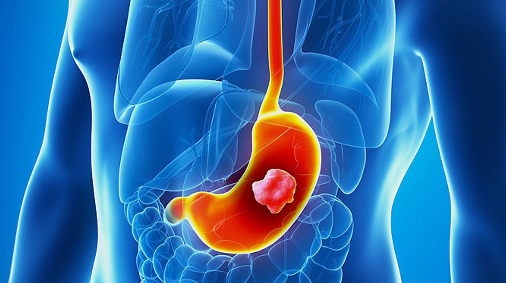

Kanker Lambung
Kanker lambung adalah suatu jenis tumor ganas yang tumbuh pada lambung, yaitu organ pencernaan berbentuk kantong di tengah rongga perut manusia.
Terdapat beberapa jenis kanker lambung yang paling umum, antara lain:
- Adenocarcinoma, yaitu kanker lambung yang menyerang sel-sel mukosa, yaitu pelapis bagian dalam lambung.
- Carcinoid tumor, yaitu kanker lambung yang menyerang sel-sel penghasil hormon pada lambung.
- Gastrointestinal Stromal Tumor (GIST), yaitu kanker lambung yang menyerang jaringan ikat atau otot-otot dinding perut.
- Limfoma lambung, yaitu kanker lambung yang menyerang sel-sel imun yang dapat ditemukan pada dinding lambung.
- Squamous cell carcinoma, small cell carcinoma, dan leiomyosarcoma, yaitu jenis-jenis kanker lambung yang lebih jarang ditemukan.
Gejala Kanker Lambung
bebrapa gejala kanker lambung, antara lain:
- Kembung dan sering bersendawa.
- Anemia atau kekurangan sel darah merah.
- Cepat merasa kenyang saat makan.
- Gangguan pencernaan yang sering kumat.
- Kehilangan nafsu makan.
- Kehilangan nafsu makan.
- Mual dan muntah, hingga muntah darah.
- Nyeri pada tulang dada.
- Pembengkakan pada perut karena penumpukan cairan.
- Penurunan berat badan tanpa sebab yang jelas.
- Perut terasa mulas atau nyeri.
- Perut terasa mulas atau nyeri.
- Tinja berwarna hitam atau terdapat darah pada tinja.
- Kekuningan pada kulit atau bagian putih mata.
Penyebab dan Faktor Risiko Kanker Lambung
Kanker lambung terjadi ketika sel-sel pada bagian tertentu di lambung berkembang secara tidak terkendali. Penyebab dari pertumbuhan tidak terkendali ini belum diketahui secara pasti. Namun demikian,
terdapat beberapa faktor risiko yang diduga dapat memicu kanker lambung, antara lain:
- Berusia di atas 55 tahun.
- Jenis kelamin laki-laki.
- Golongan darah A.
- Infeksi bakteri H. Pylori.
- Kebiasaan merokok.
- Pengidap tukak lambung, anemia pernisiosa, atau polip lambung.
- Pola makan tinggi garam, acar, processed food, daging merah, namun rendah serat.
- Riwayat keluarga yang mengidap kanker lambung.
- Riwayat pernah menjalani operasi pada lambung.
- Pengidap kanker limfoma, kanker sel darah putih, kanker esofagus, kanker usus, kanker prostat, kanker serviks, dan kanker paru-paru.
Diagnosis Kanker Lambung
Dokter akan mendiagnosis kanker lambung dengan melakukan wawancara medis, pemeriksaan fisik, serta pemeriksaan penunjang, antara lain:
- Pemeriksaan darah, untuk mendeteksi anemia akibat pendarahan.
- Endoskopi, untuk memeriksa bagian dalam lambung.
- Biopsi, dengan pemeriksaan sampel jaringan yang mencurigakan di laboratorium.
- Ultrasound endoskopi, barium meal X-ray, CT scan, PET scan, dan laparoskopi, untuk mendeteksi kanker lambung serta penyebarannya ke organ lain.
-
Penentuan stadium kanker lambung, yaitu:
- Stadium 1. Kanker berada pada jaringan di dalam lambung dan menyebar ke kelenjar getah bening sekitarnya.
- Stadium 2. Kanker tumbuh dalam lapisan otot dinding lambung dan menyebar semakin banyak ke kelenjar getah bening.
- Stadium 3. Seluruh lapisan lambung sudah digerogoti kanker atau banyak pertumbuhan kanker kecil yang menyebar luas ke kelenjar getah bening.
- Stadium 4. Penyebaran kanker lambung pada tahap ini sudah semakin parah dan mencapai organ tubuh yang jauh.
Pencegahan Kanker Lambung
Beberapa upaya pencegahan kanker lambung, antara lain:
- Menghindari merokok.
- Menerapkan pola makan sehat, dengan mengonsumsi makanan segar yang kaya serat dan vitamin.
- Menghindari makanan asin dan olahan.
- Menjaga berat badan ideal.
- Menggunakan aspirin atau obat-obatan antiinflamasi non-steroid dalam pengawasan dokter.
Pengobatan Kanker Lambung
Pengobatan yang dilakukan untuk mengatasi kanker lambung bergantung pada ukuran, lokasi dan jenis kanker. Beberapa upaya pengobatan yang umum dilakukan, meliputi pembedahan, kemoterapi, radioterapi, dan imunoterapi.